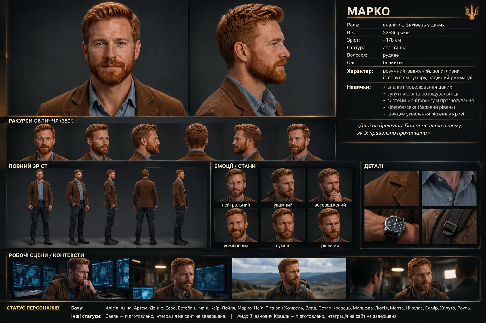

ОСНОВНА ІНФОРМАЦІЯ
Від досліджень до інженерних систем
Лех — старший науковий співробітник Нульового плану. Після переходу на Перший план він стає одним із ключових організаторів наукової та інженерної роботи. Оцінює складні технічні завдання, поєднує окремі напрями й перетворює розрахунки на практичні плани.
Походження: Нульовий план
Фах: науковець, старший науковий співробітник, інженерний координатор
Напрями: дослідження, інженерія, портальні технології, підземна інфраструктура
Проєкти: науковий центр, медичний сектор, підземні міста, перенесення міської інфраструктури
Співпраця: Миколай, Дмитро, Богдан, Марко, наукові та інженерні команди
Візуальний образ: руде волосся, коротка руда борода, світла сорочка й коричневий піджак
Вік і зріст: у рукописах не встановлені
НАУКОВИЙ ЦЕНТР
Створення дослідницької інфраструктури
Лех представляє групу науковців із Нульового плану та бере участь у створенні наукового центру в приміщеннях, наданих Євгеном. Там розгортають лабораторії, перевозять обладнання й залучають фахівців різних напрямів. Паралельно формується медичний сектор із клінічними лабораторіями, житлом для персоналу та медичними капсулами.
ПІДЗЕМНІ МІСТА
Інженерія порятунку
Лех пропонує не лише будувати нові підземні комплекси, а й переносити готові міста Нульового плану разом із будівлями, виробництвами, транспортними вузлами та інфраструктурою. Він організовує інженерні групи й контролює підготовку захисних оболонок, каркасів, комунікацій і систем життєзабезпечення.
Згодом його робота охоплює мережу підземних міст по всій Україні. Лех координує графіки й паралельні роботи, перерозподіл техніки та фахівців, перевірки готовності комплексів і міжміські транспортні зв’язки. Він наполягає: швидкість не може бути важливішою за безпеку, а заселення можливе лише після перевірки конструкцій та інженерних систем.
Для Донецького напрямку він оцінює старі шахтні виробки, визначає придатні ділянки й пояснює, чому шахта сама по собі ще не є готовим підземним містом.
РОБОТОТЕХНІКА
Партнерство з Марком
Під час презентації платформи R-10 Лех уважно оцінює конструкцію та ставить запитання про стійкість, автономність, режими руху, керування через мислезв’язок і серійне виробництво. Його цікавить не ефектна демонстрація, а практична користь для бійців та інженерних підрозділів. Він взаємодіє з Марком, оцінюючи результати випробувань і перспективи масштабування роботизованих систем.
ХАРАКТЕР І ПІДХІД ДО РОБОТИ
Вимогливість до фактів і результату
Лех зосереджений, практичний і прямолінійний. Незаплановані втручання в роботу можуть його дратувати. Водночас, побачивши реальну перспективу проєкту, він швидко переходить від критики до предметного планування. Відверто говорить про обмеження, потребу в людях і ризики та не обіцяє того, чого команда ще не здатна виконати.
ДОВІДКОВІ ДАНІ
Межі підтвердженого канону
Що підтверджено рукописами
- Лех — старший науковий співробітник Нульового плану.
- Організовує наукові й медичні об’єкти та залучення фахівців.
- Координує інженерні роботи з підземними містами й перенесенням міської інфраструктури.
- Оцінює платформу R-10 і співпрацює з Марком.
Візуальний патерн
Руде волосся, руда борода, світла сорочка та коричневий піджак — деталі наданого зображення, а не текстового опису рукописів.
Що невідомо
Точний вік, зріст, місце народження, родина й повна особиста історія не встановлені. Також не підтверджено, що Лех є характерником.
Появи в книгах
Книга 1: науковий центр і медичний сектор. Книга 2: підземні міста, інженерні роботи та оцінювання R-10. Книга 3: масштабування мережі підземних міст і координація нових етапів будівництва.